<p class='titlep'> </p> <bodyP> <div class="person"></div> </bodyP> # Securing Systems ### CSE-400 <p class="blink" style="color:blue;font-size:24px;">xinxing.wu@midway.edu</p>
# Key knowledge - Securing networked systems, particularly those connected via Wi-Fi. - using encryption protocols like Wi-Fi Protected Access(WPA) for Wi-Fi and HTTPS for web traffic to protect against threats like machine-in-the-middle attacks and packet sniffing, which can expose sensitive data such as login credentials and personal information.
# Contents [Wi-Fi](#/WiFi)<br> [HTTP](#/HTTP)<br> [Packet Sniffing](#/Sniffing)<br> [Cookies](#/Cookies)<br> [HTTPS](#/HTTPS)<br> [VPNs](#/VPNs)<br> [SSH](#/SSH)<br> [Ports](#/Ports)
# Contents (Cont.) [IP Addresses](#/Addresses)<br> [Deep Packet Inspection](#/Inspection)<br> [Proxy](#/Proxy)<br> [Malware](#/Malware)<br> [Antivirus](#/Antivirus)<br> [Zero-Day Attacks](#/Attacks)<br> [Assignments](#/Assignments)
# Wi-Fi
## Wi-Fi - Securing systems: networked or even inter-networked - Encryption: accounts, data, systems. ## Wi-Fi - Switch = connects devices inside the same network (LAN). - Router = connects different networks together (LAN ↔ WAN/Internet). ## Wi-Fi - Wi-Fi is connected via wireless technology to the internet and beyond. - So probably by now you've realized that when you're on Wi-Fi, you have to first choose your network. ## Wi-Fi - And you might choose your network from a dropdown menu on your computer or the like, or it might auto select it. <p>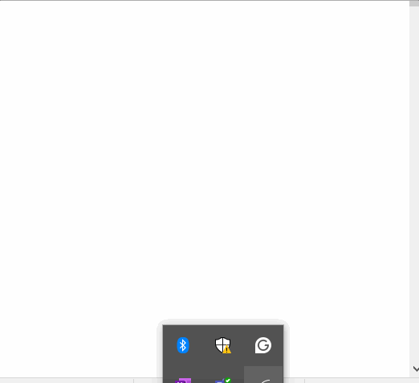</p> ## Wi-Fi - Your device wirelessly. - So you have an encrypted connection between that wireless device, often called an access point. ## Wi-Fi - An access point is a wireless network device that acts as a portal for devices to connect to a local area network. Access points are used for extending the wireless coverage of an existing network and for increasing the number of users that can connect to it. - An access point is a wireless network device that acts as a portal for devices to connect to a local area network. ## Wi-Fi - Wireless routers can function as access points, but not all access points can work as routers. ## Wi-Fi - A typical wireless router combines three functions: router, switch, and wireless access point (AP). Many home routers can be configured to work only as an AP if you disable their routing/DHCP functions. ## Wi-Fi - Stand-Alone Access Points (Not Routers) - A wireless access point only provides Wi-Fi connectivity to a wired network. It does not perform routing or run a DHCP server, so it cannot replace a router on its own. <p class='titlep'> </p> ## <p class="hover-underline-animation">What is the actual technology that's being used to secure Wi-Fi networks nowadays?</p> ## Wi-Fi - Wi-Fi Protected Access, or WPA. - WPA is a security standard for computing devices equipped with wireless internet connections. WPA was developed by the Wi-Fi Alliance to provide more sophisticated data encryption and better user authentication than Wired Equivalent Privacy (WEP), the original Wi-Fi security standard. ## Wi-Fi Wi-Fi Protected Access and using a secure Wi-Fi network is only technically encrypting your traffic between you and device
# HTTP
## HTTP - The world has gotten better about using more and more encryption in various products, and software, and applications <p>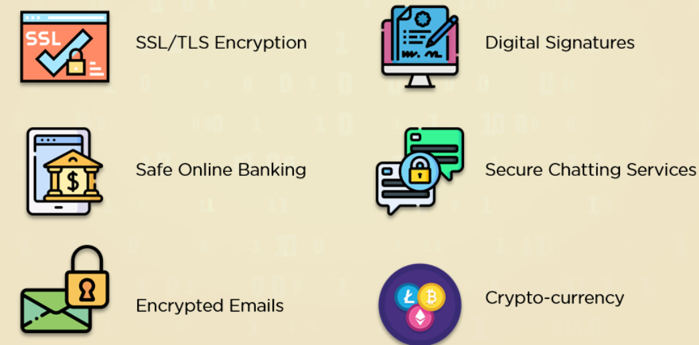</p> <p>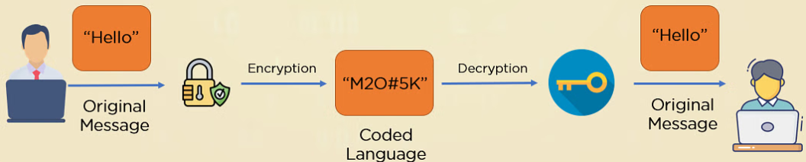</p> ## HTTP - http://www.midway.edu - Prefix - HTTP (Hypertext Transfer Protocol), a language that computers use when talking on the worldwide web ## HTTP - A browser on your phone, or laptop, or desktop, and you're visiting a URL that starts with HTTP, your device is about to communicate with some remote server using this protocol, this language - a set of conventions for talking between each other. <p>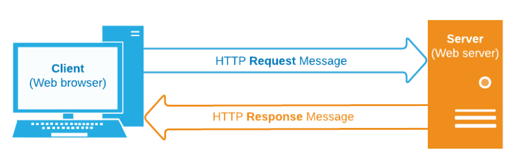</p> ## HTTP - Security of our data - the information, or the packets of information that we're sending from browser to server and back are vulnerable to eavesdropping, potentially, if you're only using HTTP <p>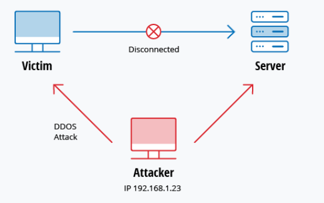</p> <p class='titlep'> </p> # <p class="hover-underline-animation">HTTP by definition is not encrypted</p> ## HTTP - If Alice is sitting at her desktop, or laptop, or phone, and trying to visit some website, here represented as our friend, Bob, there could be some third party, Eve, who's eavesdropping in between--a machine in the middle ## HTTP - Worse, they can even manipulate what you're sending or receiving <p>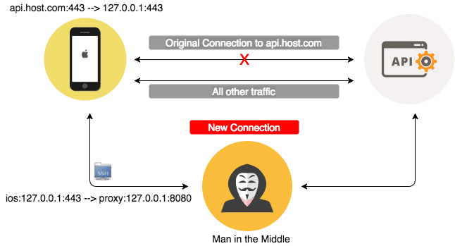</p> > A common scenario for this machine in the middle attack is when your internet service provider, or the coffee shop whose Wi-Fi you're using, or the hotel whose Wi-Fi you're using wants to inject advertisements into maybe each and every web page you are visiting ... because if you're not using encryption, ## HTTPS <p>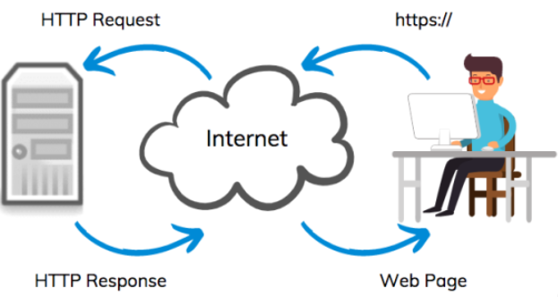</p> - To redirect a website from HTTP to HTTPS, you can use a web server or a content management system (CMS): Use a web server;Use a CMS;Use an .htaccess file;Use a TLS certificate ## HTTPS <p>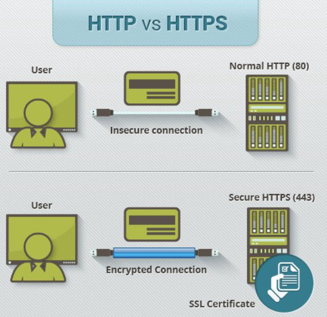</p> <p class='titlep'> </p> ## <p class="hover-underline-animation">How to detect machine in the middle and get rid of it?</p> <div class="popup" onclick="myFunction1()"><p class="blink" style="font-size:32px;"><spanBYMix>Short answer</spanBYMix></p> <span class="popuptext" id="myPopup1" STYLE="font-size:20px">is you cannot necessarily detect it.<br> Encryption is going to help us push back on exactly this threat.</span></div>
# Packet Sniffing
<p class='titlep'> </p> ## Packet Sniffing - A packet is the a virtual envelope of sorts that you might use when sending data on the internet. - From Alice to Bob - Inside of this packet is the actual message that Alice is sending to Bob - Bob is hopefully sending back to Alice ## Packet Sniffing > Packet sniffing is a method of detecting and assessing packet data sent over a network. It can be used by administrators for network monitoring and security. However, packet sniffing tools can also be used by hackers to spy or steal confidential data. - Continue the story ... <p class='titlep'> </p> # <p class="hover-underline-animation">What's going on inside of these envelopes?</p> ## Packet Sniffing - If the contents of these envelopes are not encrypted...any machine in the middle can technically take a quick glance inside of these envelopes...see what's inside of them, even change what's inside of them, as we've seen, and then pass it along. ## Packet Sniffing ### <p class="hover-underline-animation">What could be inside?</p> - Representing a browser requesting a web page from a server <p>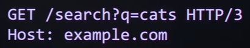</p> ## Packet Sniffing - When you visit a search engine: type into the search box what it is you're searching for-- maybe, cats-- ### <p class="hover-underline-animation">What happens is your phone, or your laptop, or your desktop</p> <p>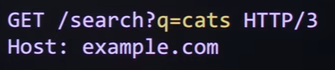</p> ## Packet Sniffing - Search - it being Google, or Bing, ... being sent from Alice to Bob, or from you to Google or Bing. - Protocol, HTTP - version 3 ## Packet Sniffing - In the middle, some adversary, can sniff this packet and see what's going on inside. - If I'm trying to check out on some website, like Amazon ... ## Packet Sniffing - Buy something with a credit card? What is inside of this envelope - Using HTTP ## Packet Sniffing - uploading my credit card to the server...If anyone sniffs this packet, they might actually be able to find my credit card, and maybe my name, and my address,... <p>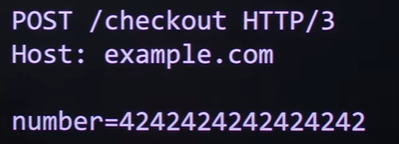</p> <p class='titlep'> </p> ### <p class="hover-underline-animation">If someone is performing an attack from a machine in the middle, does the person actually have to be connected to the same Wi-Fi network as you?</p> <div class="popup" onclick="myFunction2()"><p class="blink" style="font-size:32px;"><spanBYMix>Short answer</spanBYMix></p> <span class="popuptext" id="myPopup2" STYLE="font-size:20px">They would be connected to the same Wi-Fi network but that is not necessary.</span></div> <p class='titlep'> </p> ### <p class="hover-underline-animation">Do people have to know your IP address in order to be able to see what you're doing or read what websites you're going to?</p> <div class="popup" onclick="myFunction3()"><p class="blink" style="font-size:32px;"><spanBYMix>Short answer</spanBYMix></p> <span class="popuptext" id="myPopup3" STYLE="font-size:20px">An IP address is a unique identifier. No.</span></div> > MAC address (network card): historically globally unique, but modern OSes randomize MACs by default; admins can set “locally administered” MACs.
# Cookies 🌞
## Cookies - Most time you visit a website nowadays, one or more cookies are installed in your computer. - When you actually visit a website for the first time, particularly one that you need to log into, and therefore, that needs to remember you when you click, click, click on different pages <p>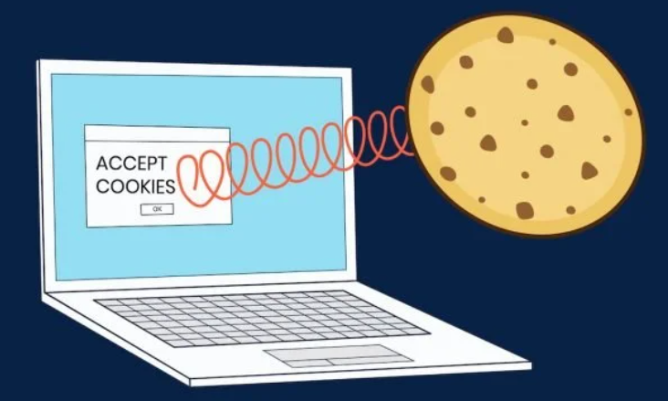</p> ## Cookies - The server responds to your request, for instance after logging in, with an HTTP response - called status code - Similar in spirit to the 404 you might have seen in the real world, but 200 means OK. <p>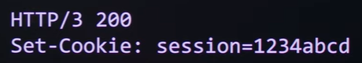</p> ## Cookies - A session is just a concept that refers to the ability of a server to remember who you are. <p>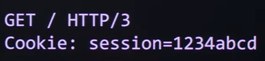</p> ## Cookies - It's like your shopping session, a website like amazon.com, where you might have a shopping cart that you want to keep adding things to. The website wants to remember what's in your cart. ## Cookies - The website is going to check your hand stamp... you've already shown them your ticket or your ID. <p>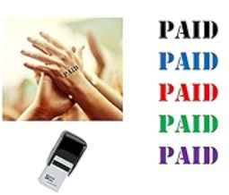</p> ## Cookies - When your browser visits the same website again and again, it, of course, doesn't have a hand to show ... - It sends its own message via HTTP, inside of its own virtual envelopes back to the server. - Every time you click another link, add something to your cart, - Open a new email on the site into which you've logged in. ## Cookies - Presenting my hand with that stamp - session equals 1234abcd. ## Cookies - This cookie might be generally stored in memory temporarily or it might actually be installed longer term on your computer, for a day, for a week, a year, ... depending on how the server's been configured. - But the catch with these cookies, even though they do solve a very useful problem of retaining state,...they make you <spanRED>vulnerable</spanRED>. <p>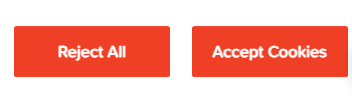</p> ## Cookies - Session hijacking: It's a form of attack where a bad actor steals or manipulates the session token to gain unauthorized access to information or services. The hijacking process typically begins when an attacker intercepts this token, which can be likened to a secret handshake between the user and the website. ## Cookies Session hijacking ... if you're not using encryption <p>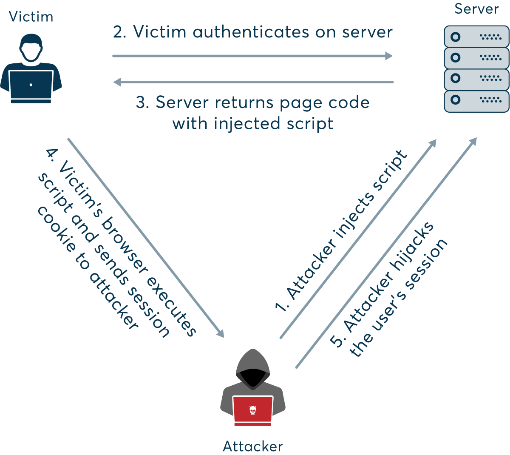</p> ## Cookies ... HTTPS - Because if you're using HTTP, all of the contents of those envelopes, including the set cookie line and the cookie line just being sent back and forth in the clear, without any encryption at all. ## Cookies > Session cookie happens to be 1234abcd ... there's nothing technically stopping an adversary now from sending its own request, like this, to that same server, but copying your cookie, and essentially pretending that cookie is the adversary's and not just mine. ## Cookies - If you're using an encryption - HTTPS - Ensure that not only are all of the contents of these message encrypted that you care about going back and forth
# HTTPS
## HTTPS 🌞 <p class='titlep'> </p> ### <p class="hover-underline-animation">What is HTTPS doing for us?</p> ## HTTPS >Ensuring that the connection between Alice and Bob is completely encrypted, ... So that even if there are other machines in between Alice and Bob, as there would be on the internet, none of them should be able to see what is inside of those virtual envelopes going back and forth. ## HTTPS - Recall that as Alice sends one of these virtual envelopes to Bob, and Bob might send a virtual envelope back to Alice, - HTTPS ensures that what's inside of the envelope is, indeed, encrypted. <p>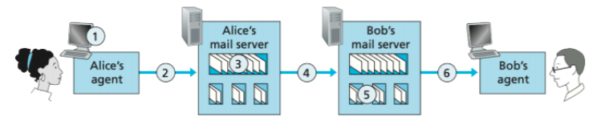</p> > So that even if some other machine in the middle intercepts one of these virtual envelopes, they can't understand what's inside of it. ## HTTPS - Protocol - process of encrypting HTTP traffic - <div class="popup" onclick="myFunction4()"><p class="blink" style="font-size:32px;"><spanBYMix>HTTPS</spanBYMix></p> <span class="popuptext" id="myPopup4" STYLE="font-size:20px">Hyper Text Protocol Secure (HTTPS) appears in the URL when a website is secured by an SSL/TLS certificate. Users can view the details of the certificate, including the issuing authority and the corporate name of the website owner, by clicking the lock symbol on the browser bar.</span></div> - Most recent version of this protocol is called <div class="popup" onclick="myFunction5()"><p class="blink" style="font-size:32px;"><spanBYMix>TLS</spanBYMix></p> <span class="popuptext" id="myPopup5" STYLE="font-size:20px">Transport Layer Security (TLS) is an updated, more secure version of SSL. We still refer to our security certificates as SSL because it’s a more common term, but when you buy SSL from DigiCert, you get the most trusted, up-to-date TLS certificates.</span></div>; Earlier version: <div class="popup" onclick="myFunction6()"><p class="blink" style="font-size:32px;"><spanBYMix>SSL</spanBYMix></p> <span class="popuptext" id="myPopup6" STYLE="font-size:20px"> Secure Sockets Layer (SSL) certificates, sometimes called digital certificates, are used to establish an encrypted connection between a browser or user’s computer and a server or website.<br> SSL is standard technology for securing an internet connection by encrypting data sent between a website and a browser (or between two servers). It prevents hackers from seeing or stealing any information transferred, including personal or financial data. </span></div> - TLS is essentially the new and improved version of SSL, modern browsers should now be using. - [What is SSL, TLS & HTTPS?](https://www.digicert.com/what-is-ssl-tls-and-https) ## HTTPS - Encrypting your traffic - public key cryptography. - Two parties, A and B, - Each their own public and private key, using that, - Recall that asymmetric cryptography - establish a secure connection even if you've never visited some website or some app before now. <p class='titlep'> </p> ## <p class="hover-underline-animation">What does it mean for a browser to be using TLS?</p> ## HTTPS - The web server has a certificate - a digital certificate - As really a public key ... has been signed by someone else. ## HTTPS - The website has a public key (signed by some third party) and a private key (stays private). - Assume that there are some big third parties out there: the browser manufacturers, Google, Microsoft, Apple - Certificates <p>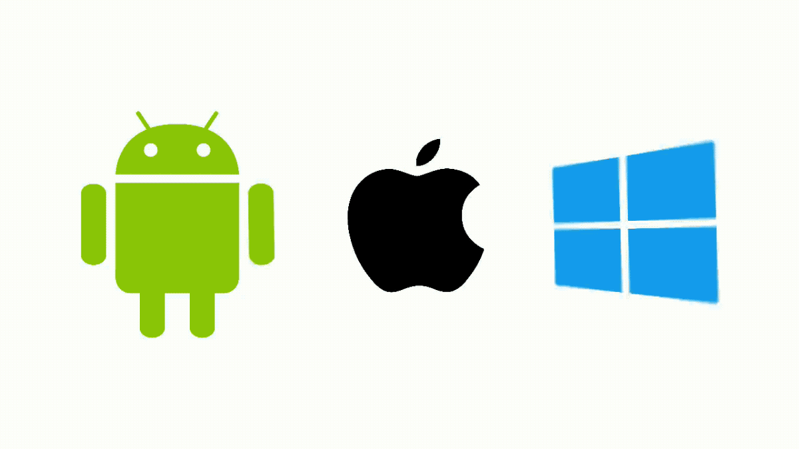</p> ## HTTPS - Certificates technically are called <div class="popup" onclick="myFunction7()"><p class="blink" style="font-size:32px;"><spanBYMix>X.509</spanBYMix></p> <span class="popuptext" id="myPopup7" STYLE="font-size:20px">An X. 509 certificate is a digital certificate that uses the widely accepted international X. 509 public key infrastructure (PKI) standard to verify that a public key belongs to the user, computer or service identity contained within the certificate.</span></div> <p>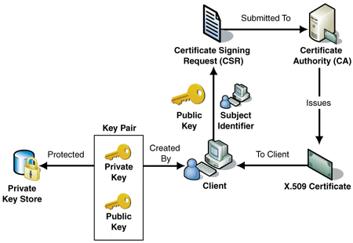</p> ## HTTPS - You can think of a certificate as almost a printed piece of paper with some interesting information on it like the name of the website, and how long the certificate is valid for, and the public key - a mathematical relationship with that private key ## HTTPS - Big companies are doing the signing of these website's certificates - called Certificate Authorities, or CAs. <p>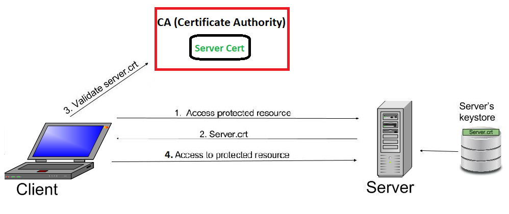</p> ## HTTPS - Various browser manufacturers of the world - Apple, Microsoft, Google, Mozilla, and others have gotten together and included in their browsers, like Edge, and Firefox, and Safari, and Chrome, a list of certificate authorities that they trust. > If you trust Apple, Google, and Microsoft, and Mozilla, and other browser manufacturers, then by transitivity, you should trust any of the certificate authorities that they trust. <p class='titlep'> </p> ## <p class="hover-underline-animation">What actually happens when your browser visits a website?</p> ## HTTPS <spanGREEN>Assuming you're using HTTPS</spanGREEN> - Downloading the certificate from that website, - Your browser then calculates a hash value for that certificate by looking at certain fields within it, using a special hash function that produces a fixed representation of the certificate. <p>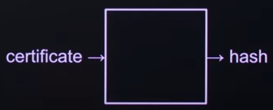</p> ## HTTPS - Next, your browser takes a look at the signature on that certificate. - It uses the certificate authority who signed that certificate's public key, the signature from that server certificate. ## HTTPS - It runs it through this algorithm here, decrypting the signature with the public key. - Produce the exact same hash value. <p>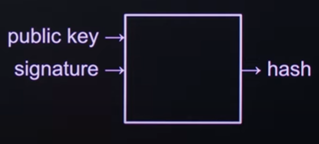</p> > If you visit a server, and it's presenting you with a certificate, and it says that that certificate has been digitally signed by a certificate authority, your browser can use the certificate authority's public key to decrypt that signature. <p class='titlep'> </p> ## <p class="hover-underline-animation">Does HTTPS, and in turn TLS, keep you secure?</p> <p class='titlep'> </p> # Mathematically, yes! ## HTTPS - Although TLS, for historical reasons, attack called <br><br><div class="popup" onclick="myFunction8()"><p class="blink" style="font-size:32px;"><spanBYMix>SSL stripping</spanBYMix></p> <span class="popuptext" id="myPopup8" STYLE="font-size:20px"> SSL stripping attacks, also known as SSL strip, SSL downgrade, or HTTP downgrade attacks, compromise the security of HTTPS by downgrading the connection to the more vulnerable HTTP. These attacks pose a significant cyber threat to numerous businesses. The risk is particularly high for corporate employees who frequently use open, unsecured Wi-Fi hotspots for Internet access while traveling, making them susceptible to SSL stripping attacks. In such attacks, cybercriminals infiltrate a network and position themselves as a Man-in-the-Middle (MITM), enabling them to intercept network connections. This interception technique is not limited to wireless networks; it can also be executed in wired networks if the attacker manages to access an Ethernet port.</span></div> ## HTTPS - SSL stripping - This attack involves is tricking the user into thinking they have a secure connection to a website, when they might actually have not an encrypted connection to that website. - And worse yet, they might actually have an encrypted connection to a third party a machine in the middle's own website. ## HTTPS - Typing URLs as ```http://www.example.com```, or maybe typing ```www.example.com```, or maybe typing ```example.com```, Enter, into our browsers, - You've probably noticed over time that even if you type the most succinct of those inputs, it eventually gets converted into a longer URL with the HTTP ... your browser is just trying to be helpful. ## HTTPS - Technically, to visit a website you need to use a URL, should start with or http:// or maybe https://. - So if you don't even type any of those, it might first try HTTP and then it might try HTTPS even. <p>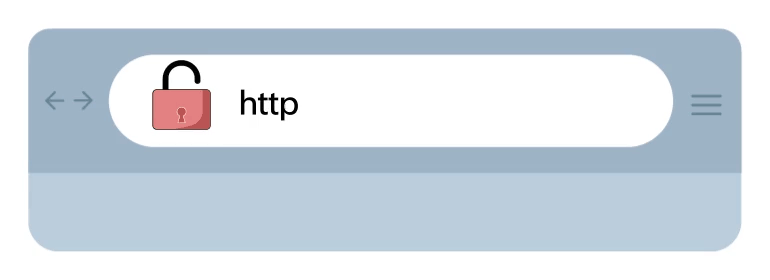</p> > But the catch is that if you start your interaction with a web server using HTTP, that alone might be enough of a window of opportunity for an adversary to do something malicious with the packet of information you're sending to the server. ## HTTPS - If inside of your browser's virtual envelope is an HTTP message like this, which is just saying, get me the home page of example.com. ## HTTPS - Not using HTTPS, you just typed HTTP, or nothing at all, and you're trusting your browser to fill this in for you, - The server could respond with a message that says ... HTTP version 3 307, which is another status code, which means redirect the browser to a different URL. - But the catch is that if you're using HTTP, and therefore, your request is unencrypted > In this story, there is a machine in the middle, waiting there, listening, to attack you, it could actually be that this response is coming from that machine in the middle and not the actual website that you intended to visit. ## HTTPS - Because if Alice is trying to reach Bob, but Eve, the eavesdropper, is in the middle, it could actually be Eve in the middle that's responding with this request. - So Bob doesn't even know what's going on in this story. ## HTTPS - This eavesdropper, this machine in the middle is particularly clever ... they're suggesting that you be redirected, per this status code, 307, to https://. <p>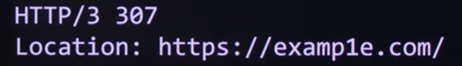</p> > This is a particularly subtle attack, whereby the adversary in this story seems to have bought a domain name that looks very similar to example.com, with an L, but they instead used the number <spanRED>1</spanRED>, which in some fonts and on some screens look so close to an <spanGREEN>L</spanGREEN> that are you <p>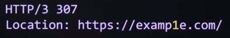</p> > In this story, you might very well have a perfectly encrypted connection using HTTPS to a server, but it's not Bob's server in this story, it's now Eve's server in the middle. - So SSL stripping in this case refers to an attack, ....actually redirect you to their own HTTPS site. ## HTTPS - SSL stripping attacks (also known as SSL downgrade or HTTP downgrade attacks) are a type of cyber attack in which hackers downgrade a web connection from the more secure HTTPS to the less secure HTTP. ## HTTPS - Every connection to a website requires an application protocol, which is either HTTP or HTTPS. HTTP is less secure because it transmits information in plaintext, whereas HTTPS is more secure because it encrypts all information. HTTPS encrypts information through the use of SSL/TLS, which acts as a digital certificate that can authenticate identities and encrypt data. ## HTTPS > SSL stripping attacks occur when a hacker intervenes in the connection between a user and a website. The hacker sits in the middle of the connection, connecting themselves to the HTTPS version of the site and connecting the user to the HTTP version of the site. This allows them to see everything the user says in an unencrypted form. > You might be vulnerable to the phishing attacks that we've discussed before, where you might provide information into a website that is not actually legitimate. <p class='titlep'> </p> ## <p class="hover-underline-animation">How can you mitigate this kind of attack?</p> Always typing out HTTPS...get tedious quickly, - You're the designer of the website, the business owner running the website, or you have control over not the browser, but the server ... you can use a protocol called <div class="popup" onclick="myFunction12()"><p class="blink" style="font-size:32px;"><spanBYMix>HSTS</spanBYMix></p> <span class="popuptext" id="myPopup12" STYLE="font-size:20px">HTTP Strict Transport Security (HSTS) is a simple and widely supported standard to protect visitors by ensuring that their browsers always connect to a website over HTTPS. HSTS exists to remove the need for the common, insecure practice of redirecting users from http:// to https:// URLs. </span></div> ... can actually configure your server to provide hints to browsers that you know what, they should always use HTTPS when talking to the server no matter what the human has decided. > Virtual envelopes that just informs the server that we really want to be strict about our transport security. - Using TLS, using HTTPS...use strict security for at least one year. <p>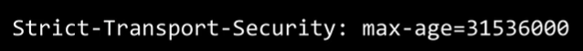</p> - This is the number of seconds in a 365-day year ## HTTPS - You can further configure your server to not just output this response in every one of those virtual envelopes, going back to browsers. You can even more protectively say use strict security for subdomains <div class="popup" onclick="myFunction9()"><p class="blink" style="font-size:32px;"><spanBYMix>Example</spanBYMix></p> <span class="popuptext" id="myPopup9" STYLE="font-size:20px">If my user is at example.com, also make sure that their browser uses HTTPS for something like www.example.com, where in that scenario www, you can think of as a subdomain, because it's part of the example.com domain itself.</span></div> <p>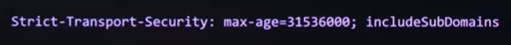</p> ## HTTPS - There is such websites as exampe.com, which is similarly look to example.com. Registrars fight against phishing websites like this. And whenever somebody tries to register a domain that's looking a little bit suspicious, it usually marks it as fraud and suspends it. ### <p class="hover-underline-animation">How do such domains still exist?</p> <div class="popup" onclick="myFunction10()"><p class="blink" style="font-size:32px;"><spanBYMix>Answer</spanBYMix></p> <span class="popuptext" id="myPopup10" STYLE="font-size:20px">Registrars, who are the companies in the world that sell you, or rent you, domain names nowadays, are being more vigilant when it comes to your buying a domain that could be maliciously used in this way. However, there's a lot of registrars out there... </span></div> ## HTTPS Should we clear the cookies frequently? <div class="popup" onclick="myFunction11()"><p class="blink" style="font-size:32px;"><spanBYMix>Answer</spanBYMix></p> <span class="popuptext" id="myPopup11" STYLE="font-size:20px">Unfortunately, super cookies cannot be stopped at the browser level. Super cookies refer to a type of cookie that's embedded by your company, your university, your internet service provider. Super cookies are actually super annoying, super difficult, super dangerous in that sense.<br> A super cookie is a cookie meant to be stored on a user's computer indefinitely. Super cookies cannot be removed in the same way that regular cookies can, making them more challenging for users to recognize and eliminate. </span></div> <p class='titlep'> </p> ## <p class="hover-underline-animation">Can you keep your system secure, particularly when they're communicating with others?</p>
# VPNs
## Did you use ... <p>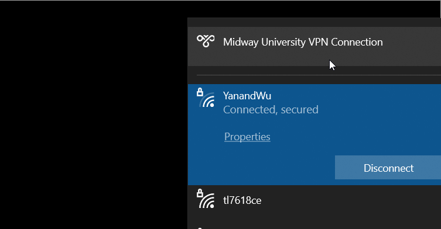</p> ## VPNs - Another technology - Virtual Private Network (VPN) - HTTPS only secures your web traffic between browser and server, - VPN is, more powerful, encrypts all of your internet traffic between you and whatever VPN server to which you're connecting <p>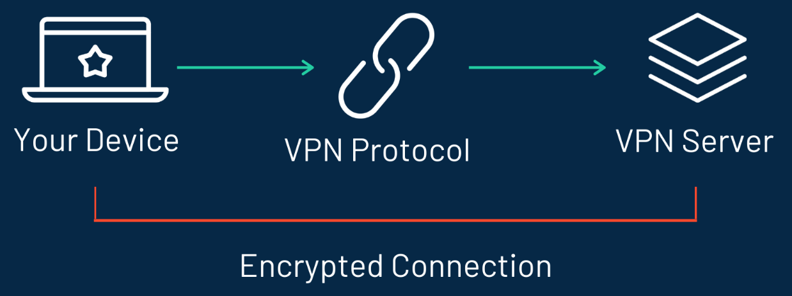</p> ## VPNs - Functions by encrypting your internet connection through VPNs remote server rather than your internet service provider (ISP). <p>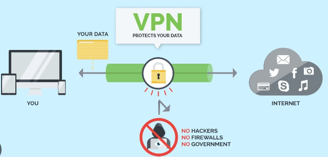</p> ## VPNs <p>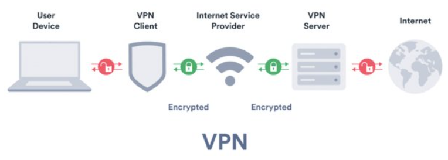</p> <p class='titlep'> </p> # <p class="hover-underline-animation">How does VPN work?</p> > A VPN allows Alice and Bob to establish an encrypted channel that even if there are machines in the middle, routers or ... shouldn't matter. ## VPNs - Since Alice and Bob are using cryptography to encrypt all of the information going in between points A and B. <p>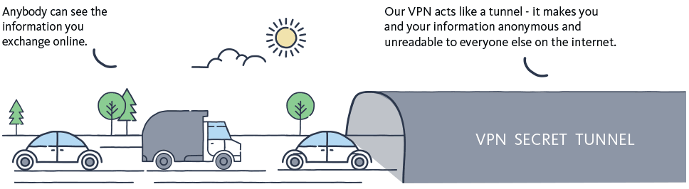</p> > Common: if you work for a company that itself has servers that you might need access to, whether it's email, or files, or anything else, you might, from your laptop, have to, connect to your company servers via VPN ... your Mac, or PC, or your phone have special software that you start up, > Log into using a username and a password, maybe using a two-factor code,...authenticate to that VPN. All of your internet traffic, thereafter, should be encrypted between you, point A, and the company, point B. - ... by nature of that VPN, all of that traffic is encrypted. <p class='titlep'> </p> # <p class="hover-underline-animation">Side effects of VPN?</p> ## VPNs - When Alice connects to Bob, if Bob is the VPN server, Alice has this encrypted tunnel. - Alice has this encrypted tunnel to Bob, which typically makes it appear as though Alice's IP address, her internet address, her unique identifier on the internet, is actually that of Bob and not her own. ## VPNs - If Alice connects to her company's VPN server, Alice then gets another IP address from her company's own VPN server - So if Alice then visits gmail.com, or amazon.com, or any other website, # <p class="hover-underline-animation">What will happen?</p> ## VPNs - Those websites will actually think that Alice's IP address is that of Bob and not Alice. - So this is very commonly used if you're in one country, ...to in order to access company resources. - You have this encrypted connection between points A and B ... thereafter, you can visit any website, any service, as though you are physically at location B. <p class='titlep'> </p> # <p class="hover-underline-animation">Other technologies for encrypt communications?</p>
# SSH
## SSH 🌞 - More technical and used by programmers and system administrators ... <p>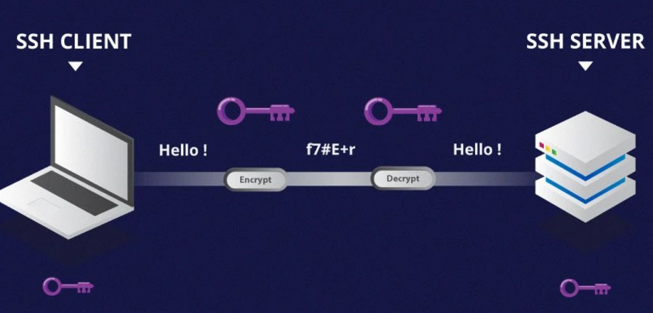</p> ## SSH - Windows - PuTTY https://www.putty.org/ - Linux - How to use SSH to connect to a remote server in Linux https://www.geeksforgeeks.org/ssh-command-in-linux-with-examples/ ## SSH - Secure Shell (SSH) is an indispensable protocol for secure network communications, used extensively by system administrators, developers, and IT professionals for accessing and managing remote systems <p>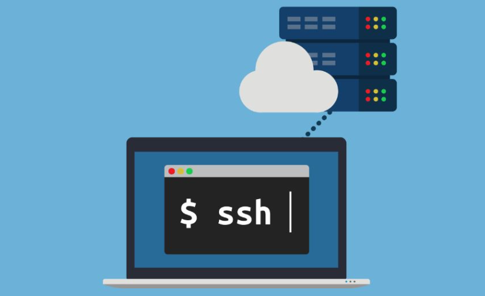</p> ## SSH - SSH is a technology via which you don't necessarily encrypt all of your traffic between point A and B, although you can use SSH to create the equivalent of a virtual private network, or VPN, but SSH is all about connecting to a remote server and executing commands on it. <p>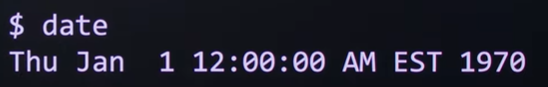</p> ## SSH - SSH into stanford.edu's server <p>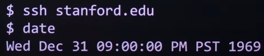</p> ## SSH - In the world of software engineering, system administration, when you want to control one server from another. ## SSH - What's powerful about it is that everything typed after that SSH command, on Stanford's server would be encrypted. - So no one between these points A and B would be able to know what controlling or what commands are typed. ## SSH <div class="wrapper nine"> <div> <h3 class="rotate"> <span>C</span> <span>O</span> <span>D</span> <span>I</span> <span>N</span> <span>G</span> </h3> </div> </div> ``` ssh remote_username@remote_host ``` ## SSH - The basic usage of scp is as follows: <div class="wrapper nine"> <div> <h3 class="rotate"> <span>C</span> <span>O</span> <span>D</span> <span>I</span> <span>N</span> <span>G</span> </h3> </div> </div> ``` scp file host:path ``` ## SSH - This copies the file to the remote host. The destination path is optional, but can be a directory on the server, or even a file name if copying a single file. It is possible to specify multiple files; the last one is the destination. <div class="wrapper nine"> <div> <h3 class="rotate"> <span>C</span> <span>O</span> <span>D</span> <span>I</span> <span>N</span> <span>G</span> </h3> </div> </div> ``` scp -r your_path_to_the_file/the_file root@38.12.0.80:/var/www/html/Test ``` - [How to Securely Copy Files in Linux | scp Command](https://www.geeksforgeeks.org/scp-command-in-linux-with-examples/) ## SSH <p>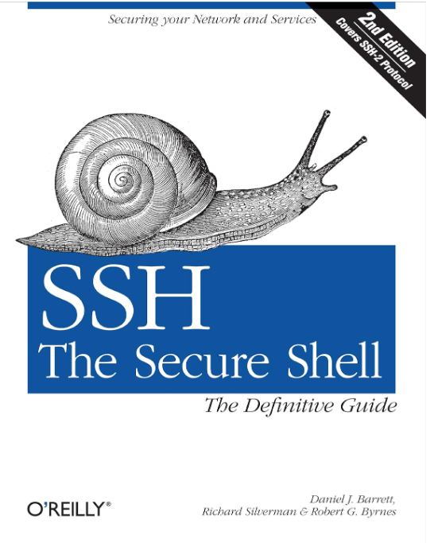</p> <p class='titlep'> </p> ## <p class="hover-underline-animation">What is on the outside of these virtual envelopes or helping these envelopes get from their source to their destination?</p>
# Ports
## Ports 🌞 - Port numbers identify a particular application or service on a system. An IP address identifies a machine in an IP network and determines the destination of a data packet, while port numbers identify <spanRED>particular applications</spanRED> or <spanGREEN>services</spanGREEN> on a system. ## Ports - It is literally just a unique number that the world has decided on that uniquely represents the type of service that that envelope is destined for. <div class="popup" onclick="myFunction13()"><p class="blink" style="font-size:32px;"><spanBYMix>For instance</spanBYMix></p> <span class="popuptext" id="myPopup13" STYLE="font-size:20px">If you at your browser were going to pull up a website like http://www.example.com, on the outside of that envelope would not only be some mention of www.example.com, but also port number, namely 80 by convention, which means that this envelope should be opened not by the other servers' email server or chat server, but by its web server specifically.<br> Now, if the web server were to respond to us by saying ... to use HTTPS instead, essentially redirecting the browser to a secure version of the website, my browser would then have to send a second request to the server ... still ... www.example.com, but on the outside of that envelope ... would be a different port number 443. </span></div> ## Ports - Common numbers include 80 for HTTP, 443 for HTTPS, 22 for SSH <p>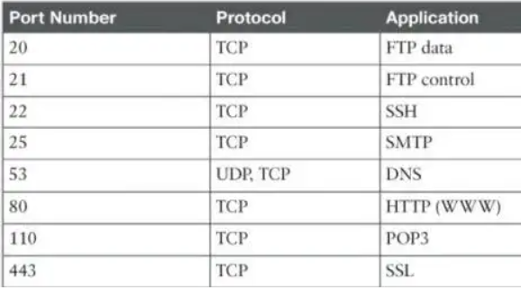</p> ## Ports - Computers actually rely on to know what piece of software on a computer should actually expect and open up these virtual envelopes <p class='titlep'> </p> # <p class="hover-underline-animation">What's the problem or danger?</p> ## Ports - Your computer can be listening for internet traffic - If these numbers are standardized, then adversaries could maybe try to access my server via those port numbers. ## Ports - Run my web server on a number other than 80, or a number other than 443, and just choose a random number between 0 and <div class="popup" onclick="myFunction14()"><p class="blink" style="font-size:32px;"><spanBYMix>65,535</spanBYMix></p> <span class="popuptext" id="myPopup14" STYLE="font-size:20px">There are three ranges: Well-known ports: 0 to 1023. Registered ports: 1024 to 49151. Dynamic and/or private ports: 49152 to 65535 </span></div>. <p class='titlep'> </p> ## <p class="hover-underline-animation">Knocking on the door of every possible port number on a server</p> ## Attack - port scanning - A port scan is a common technique hackers use to discover open doors or weak points in a network. A port scan attack helps cyber criminals find open ports and figure out whether they are receiving or sending data. It can also reveal whether active security devices like firewalls are being used by an organization. - Brute force: 0 to 65,535 - Port scanning - a specific example: penetration testing ## Ports - Penetration testing, not an adversary ... try scanning all of the ports on their servers just to see if there are ports that are open ... for good purposes...to find possible weaknesses in your infrastructure. - A penetration test, also known as a pen test, is a simulated cyber attack against your computer system to check for exploitable vulnerabilities. ## Ports - Ethical hacking is an authorized attempt to gain unauthorized access to a computer system, application, or data using the strategies and actions of malicious attackers. This practice helps identify security vulnerabilities that can then be resolved before a malicious attacker has the opportunity to exploit them. <p class='titlep'> </p> ## <p class="hover-underline-animation">Keep all attacks out? Even penetration testing out?</p> ## Firewall - A network security device that monitors incoming and outgoing network traffic and decides whether to allow or block specific traffic based on a defined set of security rules. Firewalls have been a first line of defense in network security for many years. <p>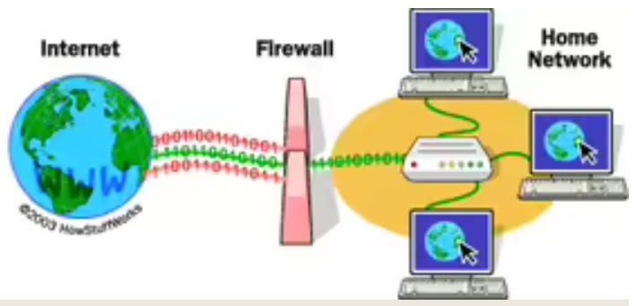</p> ## Firewall - You might want your firewall to keep all internet traffic out. - When you want to use services where you do need to talk to someone on the outside world, - But there are technologies that help mitigate this. - You can open them up or poke holes to speak, to allow certain services through. ## Tools - Port Scanner - Penetration Testing - [Kali Linux tools](https://www.esecurityplanet.com/networks/kali-linux-tutorial/) ## Tools - Port scanning: Use Nmap to scan the targeted network and Ndiff to compare Nmap scans (e.g., to see which ports get closed/opened) - Wireless pentesting: Use Aircrack-ng to crack Wi-Fi, Bettercap for recon and MitM attacks on Wi-Fi and BLE (Bluetooth Low Energy) devices > Port scanning <p>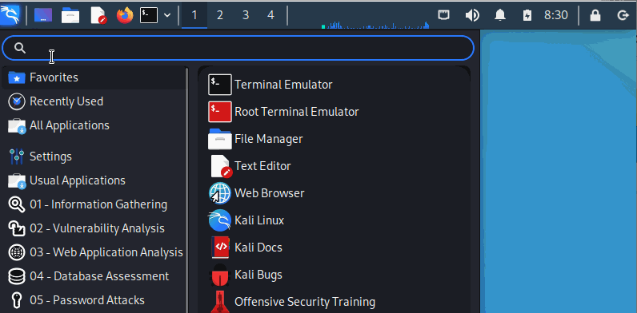</p> [A Quick Port Scanning Tutorial](https://nmap.org/book/port-scanning-tutorial.html) > Port scanning <div> <div> <h3 class="rotate"> <span>C</span> <span>0</span> <span>D</span> <span>I</span> <span>N</span> <span>G</span> </h3> </div> </div> ``` nmap www.midway.edu ``` <p>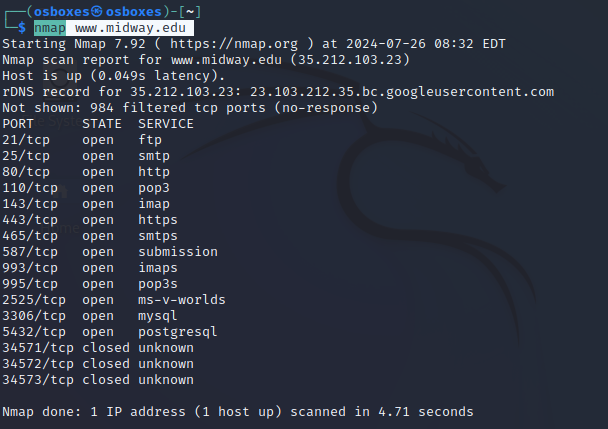</p> > Penetration Testing <p>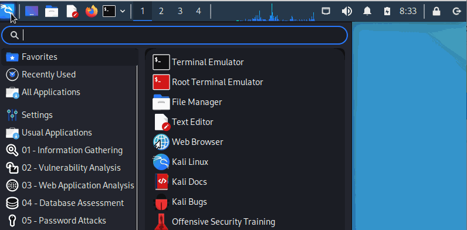</p> > Penetration Testing <div> <div> <h3 class="rotate"> <span>C</span> <span>0</span> <span>D</span> <span>I</span> <span>N</span> <span>G</span> </h3> </div> </div> ``` airmon-ng ``` <p>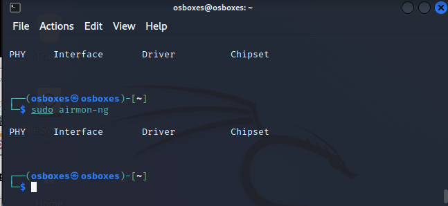</p> > Penetration Testing - Kali Linux system is running as a virtual machine not a physical machine and you have attached wifi hardware on host machine not to geust machine > Penetration Testing - [WiFi Hacking 101 – How to Secure Your Wifi Networks With Aircrack-NG](https://www.freecodecamp.org/news/wifi-hacking-securing-wifi-networks-with-aircrack-ng/) - [Aircrack-ng](https://www.aircrack-ng.org/) - [Cracking WiFi at Scale with One Simple Trick](https://www.cyberark.com/resources/threat-research-blog/cracking-wifi-at-scale-with-one-simple-trick) <p class='titlep'> </p> ## <p class="hover-underline-animation">How might these firewalls actually work?</p>
# IP Addresses
## IP Addresses 🌞 - Packets might be blocked based on IP address <div class="popup" onclick="myFunction15()"><p class="blink" style="font-size:32px;"><spanBYMix>Details</spanBYMix></p> <span class="popuptext" id="myPopup15" STYLE="font-size:20px">Rules are typically based on IP addresses, port numbers, and protocols. By inspecting packet headers, the firewall decides if it matches an allowed rule; if not, it blocks the packet. The process helps protect networks and manage traffic, but it does not inspect packet contents for potential threats </span></div> - Recall on the outside of those virtual envelopes is not just port numbers, but also the domain name, like www.example.com, on the outside of those envelopes is actually the unique address of a server. <p class='titlep'> </p> ## <p class="hover-underline-animation">An IP address is just a numeric unique address every computer on the internet, similar to the postal addresses</p> ## IP Addresses - As a parent, don't want your kids accessing social media within the home, you could just configure your home's firewall to prevent access to the IP addresses of known social media sites. <p>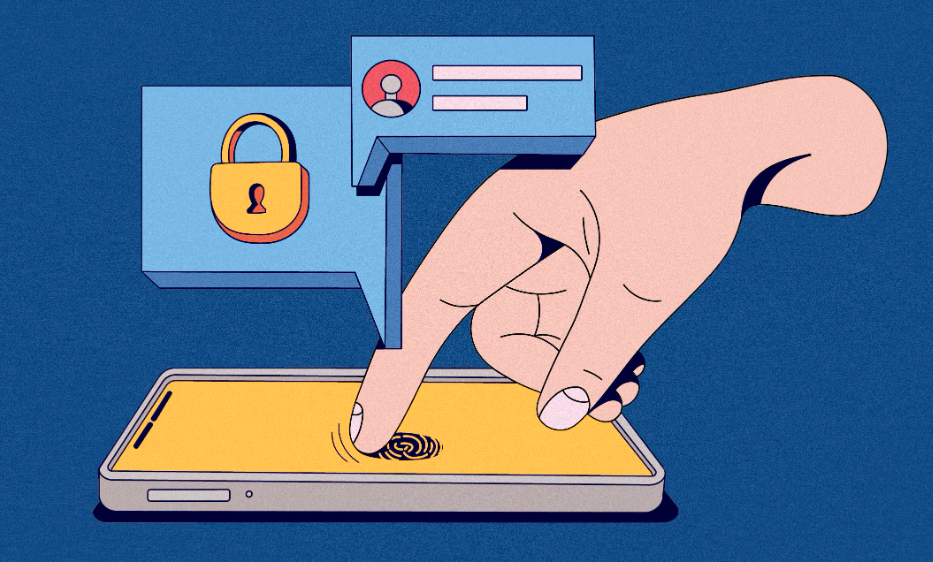</p> <p>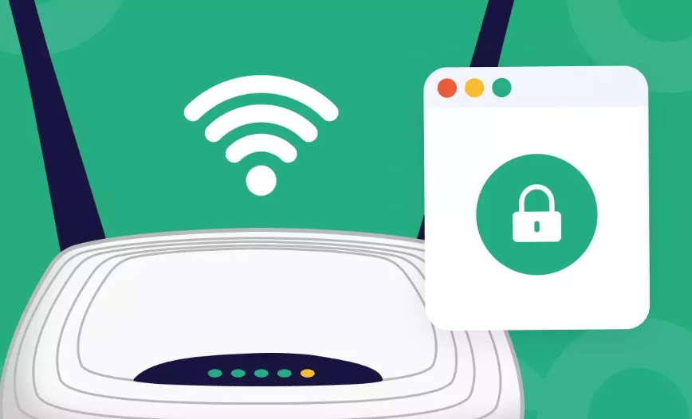</p> ## IP Addresses - You might not want to block access to sites based solely on their IP address, but perhaps based on those port numbers. - For instance, if you wanted to block all internet traffic in or out of a network, you could just use your firewall to block all of those port numbers. <p>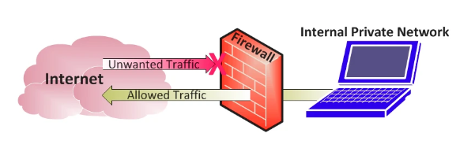</p> ## IP Addresses - Firewalls to block traffic based on IP address, <p>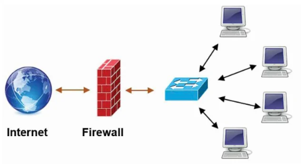</p> - But if,you realize that you still want to be able to remotely control a computer or server in that network, you could open up just one port number, for instance, 22, if you want to allow SSH back and forth.
# Deep Packet Inspection
## Deep Packet Inspection 🌞 - Deep packet inspection (DPI), also known as packet sniffing, is a method of examining the content of data packets as they pass by a checkpoint on the network. <p>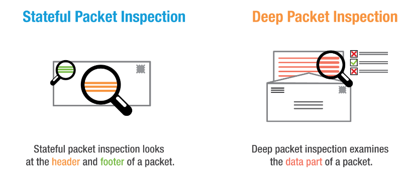</p> ## Deep Packet Inspection - These virtual envelopes...inside them. You can even more reliably block certain sites by their domain name-- not just their IP address, but by their name...via deep packet inspection <p>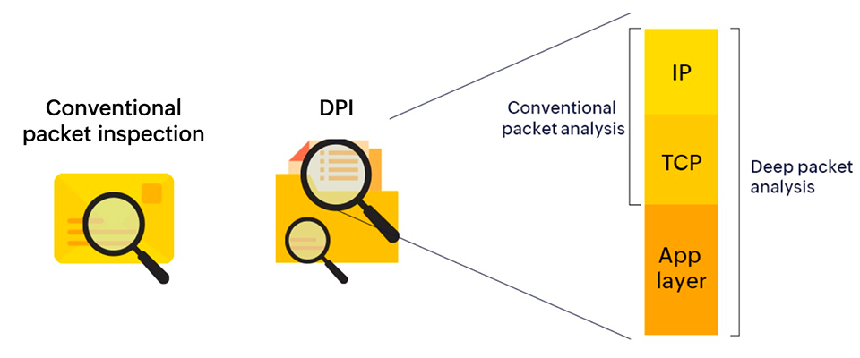</p> > DPI - everything inside of this envelope - The sender, the receiver, the contents of the message <div class="popup" onclick="myFunction16()"><p class="blink" style="font-size:32px;"><spanBYMix>Example</spanBYMix></p> <span class="popuptext" id="myPopup16" STYLE="font-size:20px">Corporations that are very concerned about their intellectual property ideas and products that they have internally, they might use deep packet inspection to make sure that you and I are not emailing the press about some new product under development, or emailing the competition, or anyone in the outside world about some product. </span></div> - Via DPI ... to check for malware and malicious software, maybe attachments ## DPI experiments - Encrypted application identification and metadata extraction - NFStream is a multiplatform Python framework providing fast, flexible, and expressive data structures designed to make working with online or offline network data easy and intuitive. It aims to be Python's fundamental high-level building block for doing practical, real-world network flow data analysis. - [Project link](https://github.com/nfstream/nfstream/tree/master) ## DPI experiments <div> <div> <h3 class="rotate"> <span>C</span> <span>0</span> <span>D</span> <span>I</span> <span>N</span> <span>G</span> </h3> </div> </div> ``` pip install nfstream ``` ## DPI experiments <div> <div> <h3 class="rotate"> <span>C</span> <span>0</span> <span>D</span> <span>I</span> <span>N</span> <span>G</span> </h3> </div> </div> ``` from nfstream import NFStreamer # We display all streamer parameters with their default values. # See documentation for detailed information about each parameter. # https://www.nfstream.org/docs/api#nfstreamer my_streamer = NFStreamer(source="facebook.pcap", # or live network interface decode_tunnels=True, bpf_filter=None, promiscuous_mode=True, snapshot_length=1536, idle_timeout=120, active_timeout=1800, accounting_mode=0, udps=None, n_dissections=20, statistical_analysis=False, splt_analysis=0, n_meters=0, max_nflows=0, performance_report=0, system_visibility_mode=0, system_visibility_poll_ms=100) for flow in my_streamer: print(flow) # print it. ``` ## DPI experiments Kali Linux ## DPI experiments Thonny ## DPI experiments - Wiresharp for facebook.pcap - [How Deep is Your Deep Packet Inspection: A Proposal for Evaluating DPI Technology](https://www.tripwire.com/state-of-security/deep-deep-packet-inspection-proposal-evaluating-dpi-technology#:~:text=There%20are%20multiple%20approaches%20to,based%20approach%2C%20or%20machine%20learning.) <p class='titlep'> </p> ## <p class="hover-underline-animation">How might a company, a university, or even a home implement this kind of firewalling, or more deeply, DPI?</p>
# Proxy
## Proxy 🌞 - A proxy server is a system or router that provides a gateway between users and the internet. - Internet Proxy Server - When you connect to the internet through your school or workplace network, your computer’s web requests often go through a proxy server. <hr> - You visit www.google.com, but the request first goes to the proxy server. The proxy checks if the content is allowed, logs the request, and then forwards it to Google. - <spanBYMix>Security, caching (faster access), and monitoring internet usage.</spanBYMix> - Proxy in Business - When someone cannot attend a meeting, they may appoint another person to vote or act on their behalf. <hr> - A shareholder authorizes another individual to vote in a company’s annual meeting using a proxy form. - <spanBYMix>Representation—acting on someone else’s behalf in decision-making.</spanBYMix> ## Proxy - Reverse proxy (like [Nginx](https://nginx.org/) in front of your app) - Think of it as the front door to a building. - You visit myapp.com → the reverse proxy answers first → it decides which inside server should handle it. - It can handle HTTPS, share traffic between many servers, and block bad requests. - You → Reverse Proxy → App Servers ## Proxy - Proxy helps prevent cyber attackers from entering a private network. It is a server, referred to as an “intermediary” because it goes between end-users and the web pages they visit online. > The proxy connection (ngrok) itself is working, but your local web service is not running or not reachable at the port you told ngrok to forward (in this case, port 8501). ## Proxy - An explanation of how a proxy server configuration works: - You enter a website's URL into your browser - The proxy server receives your request - It forwards your request to the web server - The web server sends a response (website data) back to the proxy server - The proxy server forwards you the response – the web page > ngrok operates a global network where it accepts traffic to your upstream services from clients. <p class='titlep'> </p> ## <p class="hover-underline-animation">How does a proxy server protect against cyber threats?</p> ## Proxy - A proxy server adds a layer of security between your servers and the internet to help prevent hackers from entering your private network. It works to essentially anonymise your internet browsing and traffic – a proxy server modifies and encrypts your data (to make it indecipherable), including your IP address, before sending it to the web server. <div class="popup" onclick="myFunction17()"><p class="blink" style="font-size:32px;"><spanBYMix>More details.</spanBYMix></p> <span class="popuptext" id="myPopup17" STYLE="font-size:20px">This means the destination server doesn’t know who actually made the original request, which helps keeps your personal information and browsing habits more private. A proxy server can block access to certain web pages, based on IP address or pre-defined rules.</span></div> - [What is a proxy server? Your complete guide](https://xiphcyber.com/articles/proxy-server-guide) #### Process comparison of a network-based firewall and a host-based firewall #### Process representation of proxy servers <br> <br> <br> <br> <div class="popup" onclick="myFunction18()"><p class="blink" style="font-size:32px;"><spanBYMix>More details.</spanBYMix></p> <span class="popuptext" id="myPopup18" STYLE="font-size:20px">Step1.A client requests to view content on a website.<br> Step2.The proxy server receives the client’s connection request and hides the client’s real IP address by assigning a different IP address.<br> Step3.The proxy server forwards the client’s request to the destination without revealing the client’s real network id.<br> Step4.The web server receives the client’s request.<br> Step5.When the target web server accepts the request, the requested information returns to the proxy server.<br> Step6.The proxy server receives information on behalf of the user and forwards it to the client. </span></div> ## Proxy - A proxy is very often a server. Though it doesn't have to be an actual physical server. - It can be a piece of software running in your network. - It is is <spanRED>a device that essentially implements a potential machine in the middle attack</spanRED>. <p class='titlep'> </p> ## <p class="hover-underline-animation">A proxy is a device, a server, or a piece of software that sits between two other points.</p> ## Proxy - Alice might be someone on the inside of a network. - Bob might be someone on the outside of a network. - Eve, in this case, is eavesdropping, literally, because her role in this story is to be that of a proxy. <p class='titlep'> </p> <p class='titlep'> </p> ## <p class="hover-underline-animation">The proxy takes data from one side, and ideally, maybe hands it out to the other.</p> ## Proxy - As a packet comes in this way from Alice, might look in the packet and decide, uh-uh, we're not going to send this to Bob. - Companies, universities, even home networks can use proxies to decide yes or no whether or not to allow certain traffic through. - Similar to a firewall...Sometimes, proxies are something that have to be configured, even for your own devices. ## Proxy - If you do attend a university or you do work for a company where they maybe issued your laptop, or desktop, or phone. - If your company or your school has given you a laptop, or desktop, or phone...You might have your own username and password on that laptop, or desktop, or phone, but they might have installed administratively, with root access, ## Proxy - Some kind of software that could actually be monitoring everything you're doing on that computer. - Alice can securely communicate with Bob, and maybe Bob in this story is gmail.com, or amazon.com, or facebook.com, even if you think that Alice and Bob <div class="popup" onclick="myFunction19()"><p class="blink" style="font-size:38px;"><spanBYMix>can -</spanBYMix></p> <span class="popuptext" id="myPopup19" STYLE="font-size:20px">You, Alice, can communicate securely with Bob and establish a connection between https://gmail.com, If your browser, that is your phone, or laptop, or desktop has a certificate installed by your company or university that's acting as a CA, a certificate authority, essentially your computer could be tricked into thinking that you're connecting to the real gmail.com, but you're actually connecting to the company's proxy server.</span></div> <p class='titlep'> </p> ## <p class="hover-underline-animation">How might a company, a university be observing or keeping an eye out, either for good or evil purposes?</p> ## Proxy - URL rewriting - the process of modifying Uniform Resource Locators (URLs) for various purposes. - The URL as a “web address” is a string that, when entered into the browser bar field, directs the browser to move to a given site and page. Changing the URL can help with user access and site visibility; it can also be used by hackers to redirect users without their knowledge or “trap” them in a certain site. ## Proxy ## Proxy - Url Rewriting is a simple but efficient tool that can convert your dynamic urls to static urls - A static URL is one that does not change, so it typically does not contain any URL parameters. It can look like this: https://www.example.com/archive/january.htm ## Proxy ## Proxy - If the content of a site is stored in a database and pulled for display on pages on demand, dynamic URLs maybe used. In that case the site serves basically as a template for the content. Usually, a dynamic URL would look something like this: https://code.google.com/p/google-checkout-php-sample-code/issues/detail?id=31. <div class="popup" onclick="myFunction22()"><p class="blink" style="font-size:38px;"><spanBYMix>More Details</spanBYMix></p> <span class="popuptext" id="myPopup22" STYLE="font-size:20px">You can spot dynamic URLs by looking for characters like: ?,=, & Dynamic URLs have the disadvantage that different URLs can have the same content. So different users might link to URLs with different parameters which have the same content. That's one reason why webmasters sometimes want to rewrite their URLs to static ones.</span></div> ## Proxy - [URL Rewriting Tool](https://www.coderduck.com/url-rewriting-tool) - [Dynamic URLs vs. static URLs](https://developers.google.com/search/blog/2008/09/dynamic-urls-vs-static-urls#:~:text=If%20the%20content%20of%20a,%2Fdetail%3Fid%3D31.) ## Proxy - If you have a company or a school email address, via which you receive mails from the outside world, you might notice that whenever an email contains a link, if you hover over the link and look in the bottom corner of your browser, it might actually not go to the actual link destination that you think it does. - It might actually go to a URL like ## Proxy - Companies and schools might do to combat malware, maybe malicious software that could be accidentally installed or sent your way via URLs, or to prevent you from accessing phishing websites that are trying to steal your, or the company, or the school's information, they might automatically, through some kind of proxy server, acting in this case on email, change every URL in an email you receive to be example.com and then embed at the end of that example.com, so that you can still reach your destination. <p class='titlep'> </p> ## <p class="hover-underline-animation">How might a company, a university be observing or keeping an eye out, either for good or evil purposes?</p> <p class='titlep'> </p> ## <p class="hover-underline-animation">What Is Tor? What is the Tor network?</p> ## Tor - Tor—short for the Onion Routing project—is an open-source privacy network that enables anonymous web browsing. The worldwide Tor computer network uses secure, encrypted protocols to ensure that users' online privacy is protected. Tor users' digital data and communications are shielded using a layered approach that resembles the nested layers of an onion. ## Tor - The Tor technology was initially developed and solely used by the U.S. Navy to protect sensitive government communications. The network was later made available to the public as an open-source platform, meaning that Tor's source code is accessible to everyone. Tor is upgraded and enhanced by volunteer developers in the Tor network. ## Tor network - Tor is a network of virtual tunnels that allows you to improve your privacy and security on the Internet. Tor works by sending your traffic through three random servers (also known as relays) in the Tor network. The last relay in the circuit (the "exit relay") then sends the traffic out onto the public Internet. - [ABOUT TOR BROWSER](https://tb-manual.torproject.org/about/) <p class='titlep'> </p> ## <p class="hover-underline-animation">What's the difference between VPN and Tor network?</p> <div class="popup" onclick="myFunction21()"><p class="blink" style="font-size:38px;"><spanBYMix>Answer</spanBYMix></p> <span class="popuptext" id="myPopup21" STYLE="font-size:20px">A VPN encrypts all of your traffic, including your browsing, app traffic, and file transfers. This makes it much more difficult for anyone to track your online activity. Tor only encrypts your browsing traffic, so your ISP and other third parties can still see what websites you are visiting.</span></div> <p class='titlep'> </p> ## <p class="hover-underline-animation">If I'm using VPN, does that mean that the university or the company know what I'm doing?</p> <div class="popup" onclick="myFunction20()"><p class="blink" style="font-size:38px;"><spanBYMix>Answer</spanBYMix></p> <span class="popuptext" id="myPopup20" STYLE="font-size:20px">Tor really is about privacy preserving. So it's about covering your tracks so that, kind of like the Hollywood movies, when you're here, your data is bouncing across all of these different servers in the world, and it's difficult to trace it back to its origins, by design.<br> VPN is an encrypted connection just between one point, A, and another point, B. So even though they can't see what you are doing, it is very obvious where your data is coming from thereafter.<br> So legally, for instance, if the VPN server or company were to be subpoenaed, they might have to disclose information about you. And so it's not quite as privacy preserving.</span></div> <p class='titlep'> </p> ## <p class="hover-underline-animation">What is it we're trying to keep out of our systems?</p>
# Malware
## Malware 🌞 - Malware is perhaps one of the biggest threats <p class='titlep'> </p> ## <p class="hover-underline-animation">What is malware or malicious?</p> ## Malware - Malware or malicious software is just software <p class='titlep'> </p> ### <p class="hover-underline-animation">Whether it's malicious or not is really up to the human who wrote it or the person who's using it.</p> ## Malware - If you've never programmed before, it turns out that it's not that hard to write a program that if you run it deletes all of the files on your computer, or maybe start sending out spam, or maybe starts mining bitcoin,.... ## Malware - <div class="popup" onclick="myFunction23()"><p class="blink" style="font-size:38px;"><spanBYMix>virus</spanBYMix></p> <span class="popuptext" id="myPopup23" STYLE="font-size:20px">A virus is a piece of software that attaches itself to a host, just like in the human physiological world.<br> The attach with a virus in the digital world is that you, the human, usually have to do something to get infected.<br> You have to open a file that's infected with the virus, and start running it on your computer, and loading it into your computer's memory and CPU or brain. </span></div> - Specific types of malware <p class='titlep'> </p> ### <p class="hover-underline-animation">You have to click on an attachment in an email that's perhaps infected. So viruses generally require human intervention/human mistakes.</p> ### <p class="hover-underline-animation">What's the line between a virus and Microsoft Word, or Spotify, or some other piece of software you install on your computer?</p> ## Malware - We are trusting that Microsoft Word, and Spotify, and other software you might install on your Mac, your PC, or your phone, just isn't doing bad things. ## Malware - Code of ethics ## Malware - Worm ## Malware - Travel from computer to computer, even without interaction by humans. <p class='titlep'> </p> # <p class="hover-underline-animation">How does this work?</p> ## Malware - A worm, theoretically, once it's installed on one computer, having infected it and running. - It could do that technique called port scanning from earlier. ## Malware - Maybe it can use that infected computer's internet connection and just start scanning the local network or a broader network for IP addresses of other computers and ports of other computers. ## Malware - If one of those computer's ports happens to be listening, and for unfortunate reasons, that computer is not using encryption, it's not using authentication, and it's vulnerable ... that worm can travel from computer, to computer, to computer by making these network connections via these ports at these IP addresses. ## Malware - It's the result of mistakes in software. - It's the result of there having been holes in our firewalls, in our systems by allowing them through via these techniques. ## Malware > ... deleting all of your files, spamming people, bitcoin mining, and the like, actually what adversaries have been increasingly been doing over the years is creating botnets ... <p class='titlep'> </p> ## <p class="hover-underline-animation">It's more valuable to an adversary not to completely disable your system ... ?</p> ## Malware - Disable your system ... doesn't really serve them long term ... - but <div class="popup" onclick="myFunction24()"><p class="blink" style="font-size:38px;"><spanBYMix>...</spanBYMix></p> <span class="popuptext" id="myPopup24" STYLE="font-size:16px">Maybe to install software on your computer that's just constantly running.<br> And it's not actually doing anything bad to you.<br> None of your files are deleted, no spam is being sent, but you are infected. And there's just some piece of software constantly running on your computer.<br> But maybe this adversary has somehow figured out how to infect not just your computer, but my computer, and your relatives' computer, and your friends' computer, and your classmates' computer, and hundreds, thousannds of other computers in the world.<br> Now, if this software is smart and it's constantly listening for commands, an attacker can send some kind of commands, not unlike those virtual envelopes, to this entire botnet of computers ... now everyone at the same moment start attacking some server, or everyone at this moment start sending emails, everyone at this moment start mining bitcoin.<br> You can leverage the network of hundreds or thousands of computers all at once and have a much more powerful attack therefore possible. </span></div> <p class='titlep'> </p> # <p class="hover-underline-animation">What form do those attacks take?</p> ## Malware - Denial of service attack, or DOS. For, ... financial reasons .... ## DOS - Example, I'm trying to deny service to other people, - I'm a little annoyed at Google, so I go to google.com, and then I keep hitting reload, reload, reload, reload ... <p class='titlep'> </p> # <p class="hover-underline-animation">Will success?</p> > If you have a lot of resources yourself, more resources than the site you're attacking...With botnets, when you control multiple computers, ... > The memory in a computer? - The infinite monkey theorem states that a monkey hitting keys at random on a typewriter keyboard for an infinite amount of time will almost surely type any given text, including the complete works of William Shakespeare. https://en.wikipedia.org/wiki/Infinite_monkey_theorem ## DOS - Limited ... So, if distracting a computer or server by all of these requests ... - You're denying service to other people ... once a company figured out what's happening, ... they could just block with their firewall - my IP address, for instance, coming from my phone, or my laptop, ... - Once they know where the attack is coming from, they can just deny or they can block service. ## DOS - If it's distributed, ... - If it's coming from all of us or thousands of people, thousands of IP addresses, then it gets a little <div class="popup" onclick="myFunction25()"><p class="blink" style="font-size:38px;"><spanBYMix>harder</spanBYMix></p> <span class="popuptext" id="myPopup25" STYLE="font-size:20px">Technically, they could just block all of our IP addresses, thousands of IPs. But very often, you and I share IP addresses if we're on the same campus, on the same corporate network.<br> Even though locally we might have unique addresses, to the outside world we might all share one public address from our whole company or school. And at some point, it's not going to be ...to block all of those IP addresses. </span></div> ## Summary - Malware, viruses, and worms are all cyber security threats. A virus is very specific in the sense that it self-replicates by adding its code to other applications. In a comparison of malware vs. worm, <div class="popup" onclick="myFunction26()"><p class="blink" style="font-size:38px;"><spanBYMix>malware</spanBYMix></p> <span class="popuptext" id="myPopup26" STYLE="font-size:20px">Malware is a general term that encompasses all software designed to do harm. You can compare the term “malware” to the term “vehicle.” All software-based threats are malware, just like all cars and trucks are vehicles. <br> However, similar to vehicles, there are many different kinds of malware. In other words, you can have a car, an SUV, and a truck, and you would have three vehicles. But not every vehicle is a car, a truck, or an SUV. Similarly, viruses and worms are both malware, but not all malware is a virus or a worm. </span></div> is more dangerous because it encompasses both worms and all other software-based threats, such as spyware, ransomware, and Trojans. ## Summary - Viruses can be spread from one computer to another inside files. For the virus to be activated, someone has to trigger it with an external action. For example, a virus can be embedded inside a spreadsheet. If you download the spreadsheet, your computer will not necessarily be infected. The virus gets activated once you open the spreadsheet. ## Summary - With a worm, there is no need for the victim to open up any files or even click on anything. The worm can both run and spread itself to other computers. Because a worm has the ability to automatically propagate itself, you can get a worm in your computer just because it is on the same network as another infected device. <p class='titlep'> </p> # <p class="hover-underline-animation">Malware, virus or worm: what is more dangerous?</p> ## Summary - In a comparison of malware vs. worm, malware is more dangerous because it encompasses both worms and all other software-based threats, such as spyware, ransomware, and Trojans. - [Malware vs Viruses vs Worms](https://www.fortinet.com/it/resources/cyberglossary/malware-vs-virus-vs-worm#:~:text=Malware%20vs%20worm%20vs%20virus&text=A%20virus%20is%20very%20specific,spyware%2C%20ransomware%2C%20and%20Trojans.) ## Python Malware On The Rise - The vast majority of serious malware over the past 30 years has been written in Assembly or compiled languages such as C, C++, and Delphi. However, now a large amount of malware has been written in interpreted languages, such as Python. [Python Malware On The Rise](https://www.cyborgsecurity.com/cyborg-labs/python-malware-on-the-rise/) ## Python Malware On The Rise - [DDos-Attack](https://github.com/Ha3MrX/DDos-Attack) <p class='titlep'> </p> # <p class="hover-underline-animation">Did you use antivirus software?</p>
# Antivirus
## Antivirus 🌞 - Antivirus software is software ... install on your computer...generally constantly running...Or maybe it runs on a schedule to check are there any known viruses or worms on this computer. ## Antivirus - Write a virus using Python? <div class="popup" onclick="myFunction27()"><p class="blink" style="font-size:38px;"><spanBYMix>Answer</spanBYMix></p> <span class="popuptext" id="myPopup27" STYLE="font-size:20px">The short answer: YES. <br> The longer answer: yes, BUT… </span></div> - [How to create a computer virus in Python](https://thepythoncorner.com/posts/2021-08-30-how-to-create-virus-python/) ## Antivirus - For the antivirus software to work, has to know about the virus <p class='titlep'> </p> # <p class="hover-underline-animation">How can you make sure it is always current?</p> ## Antivirus - Automatic updates - we fixed security holes, that is security-related bugs in previous versions ## Antivirus > We're not vulnerable to yesterday's mistakes > We're still vulnerable to today's and tomorrow's mistakes ## Antivirus - The newest versions of software: compatible, ... - Automatic updates are not something ... do to all of your customers all at once, but maybe a few, then a few more,
# Zero-Day Attacks
## Zero-Day Attacks - A zero-day vulnerability is a software vulnerability discovered by attackers before the vendor has become aware of it. ## Zero-Day Attacks - The problem with antivirus software in general, and even automatic updates, is that there's still humans involved in this process, whereby they have to realize - there's a new virus in the world, You have to update the antivirus software to detect those new threats, - Even if you have antivirus software installed, automatic updates, it might still take a day, a week for the companies who design that software to update those products for you. ## Zero-Day Attacks - A zero-day attack is an example of attack - an adversary maybe writes their own virus, their own worm...the world just doesn't have time to catch up. > Security - multipronged approach
<bodyDp> <div class="dancer"> <div class="head"> <div class="eye-left"></div> <div class="eye-right"></div> <div class="mouth"></div> </div> <div class="leg-left"></div> <div class="leg-right"></div> <div class="foot-left"></div> <div class="foot-right"></div> </div> </bodyDp> # Assignments
## Assignments 🌞 - <a href="https://midway.instructure.com/courses/7239/quizzes/32796">Question for System Security</a>